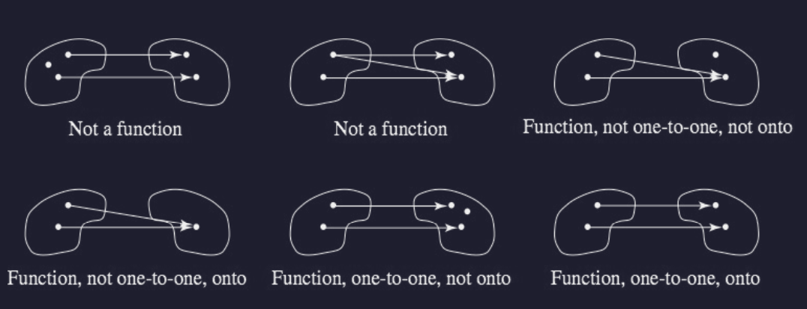

\rho = \{ \frac{p}{q}, \frac{q}{p} \}
Let S and T be sets. S = \{ (1,2) \} \qquad T = \{ a,b,c \}
A function f from S to T (f:S \to T) is a subset of S \times T (f \subseteq S \times T)
For A \subseteq S, f(A) denotes \{ f(a) | a \in A \}
Summary: Three Parts of a Function
- A set of starting values
- A set from which associated values come
- The association itself
These rules for a function mean that functions can’t have a binary relation that is one-to-many or many-to-many.
Floor Function: floor(x)$
Ceiling Function: ceil(x)
Note: Both floor and ceil domains’ are all real numbers.
Equal Functions: Two functions are equal if they have the same:
Example: Suppose:
- g: R \to R, where g(x) = x^3
- f: Z \to R, given by f(x) = x^3
Then:
- f is not the same function as g, because g has a different domain than f (all real numbers \ne all real integers)
- e.g., g can have (1.1, 1.331) while f cannot
Onto Function: Function where the range of f equals the codomain of f
To prove that a given function is onto:
One-to-one Function: Function (f:S \to T) where no member of T is the image under f of two distinct elements of S.
To prove that a function is one-to-one, we assume that there are elements s_1 and s_2 of S with f(s_1) = f(s_2) and then show that s_1 = s_2
Bijective Function: Function (f: S \to T) that’s both one-to-one and onto.

Suppose f: S \to T and g: T \to U
Composition Function: Function (g \circ f) from S to U defined by (g \circ f)(s) = g(f(s))
Theorem on Composing Two Bijections: The composition of two bijections is a bijection.
- Ergo, suppose f: S \to T and g: T \to U are onto, then g \circ f is also onto.
Next lecture (Tuesdau) will be a review section.
Each student can choose one of the four homework and make it up.
Finals will probably be graded within a day because Prof. has to travel lol.
Suppose f: S \to T and g: T \to U
Composition Function: Function (g \circ f) from S to U defined by (g \circ f)(s) = g(f(s))
Theorem on Composing Two Bijections: The composition of two bijections is a bijection.
- Ergo, suppose f: S \to T and g: T \to U are onto, then g \circ f is also onto.
Example: R \to R, f(x)=x^2 \qquad R \to R, g(x) = x-1 f \circ g(x) = (x-1)^2 \qquad g \circ f(x) = x^2 - 1
Identity Function: Function that maps each element of a set S to itself, leaving each element of S unchanged (i_s).
Inverse Function:
Theorem on Bijections and Inverse Functions:
- If f:S \to T, then f is a bijection if and only if f^{-1} exists
Example: Suppose S = \{ 1,2,3 \} and T = \{ a,b,c \}, and that
- S \to T: f = \{ (1,a), (2,b), (3,c) \}
- T \to S: g = \{ (a,1), (b,2), (c,3) \}
Then:
- f \circ g = \{ (a,a), (b,b), (c,) \} = i_T
- g \circ f = \{ (1,1), (2,2) (3,3) \} = i_S
Example: Suppose S = \{ 1,2,3 \} and T = \{ a,b,c \}, and that
- S \to T: f = \{ (1,a), (2,b), (3,b) \}
Identifying f:
- This is not one-to-one because b gets connected-to twice.
- This is not onto because C isn’t used.
- Remember the layman definition of onto function: “Every node has an association”
Example: Suppose S = \{ 1,2,3 \} and T = \{ a,b,c \}, and that
- S \to T: f = \{ (1,a), (2,b), (3,c) \}
Identifying f:
- This is one-to-one because each thing has at most one mapping
- This is onto because every ode is mapped
- Thus, this is a bijection.